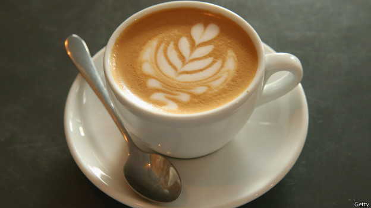

Un Universo de Sabores: Explorando los Tipos de Café y sus Preparaciones
El café es mucho más que una simple bebida. Es un mundo de sabores y aromas, un viaje sensorial que varía según el origen del grano, su proceso de tostado y el método de preparación...
Un Abanico de Posibilidades (Tipos de Café)
- Arábica: Sabor suave y aromático, con notas frutales y florales...
- Robusta: Sabor más fuerte y amargo, con mayor contenido de cafeína...
- Liberica y Excelsa: Variedades menos comunes, con sabores y aromas exóticos...
El Arte de Extraer Sabores (Métodos de Preparación)

- Espresso: Extracción rápida y concentrada...
- Filtrado (Drip Coffee): Método clásico que produce una taza limpia y equilibrada...
- Prensa Francesa: Permite una extracción completa de aceites y sabores...
- Métodos de Vertido: Uso de herramientas como V60, Chemex y Kalita Wave...
- Cafetera Italiana: Método popular que produce un café fuerte y concentrado...